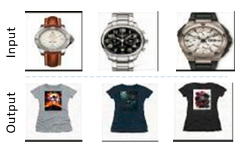

Results
The goal of the system is to learn relation between tshirts and watches, and hence generate one image, given the other. The output generated by the model in both the cases (tshirt given watch and watch given tshirt) is shown in the figure below. As seen in the results below there is a certain correlation between the color of dial and strap of the watch to the print on the tshirt.

We used AWS Deep Learning AMI (Ubuntu) Version 22.0 (Ubuntu 16.04.6 LTS (GNU/Linux 4.4.0-1109-aws x86_64v) for training our network. The complete set of all our results can be found here. It has two folders in it. First, zeroth epoch shows the results in the early stage of training while the last epoch shows outputs after the last epoch. We trained our network for 1000 epochs.
The files in the link above are named as A, AB, ABA, B, BA, BAB. The explanation of the naming convention is as follows.
- A : Input image from domain A (tshirts in our case).
- AB : Output of the Generator conditioned on image A. AB lies in domain B.
- ABA : The reconstructed image A from AB. The reconstruction loss is computed by comparing image ABA with A.
- B : Input image in domain B (watches in our case).
- BA : Generated image given image B as input. BA lies in domain A.
- BAB : The reconstructed image as reconstruction loss is computed by comparing image BAB with B.
One output sample is given below. In this case, domain A is Tshirts and domain B is watches.